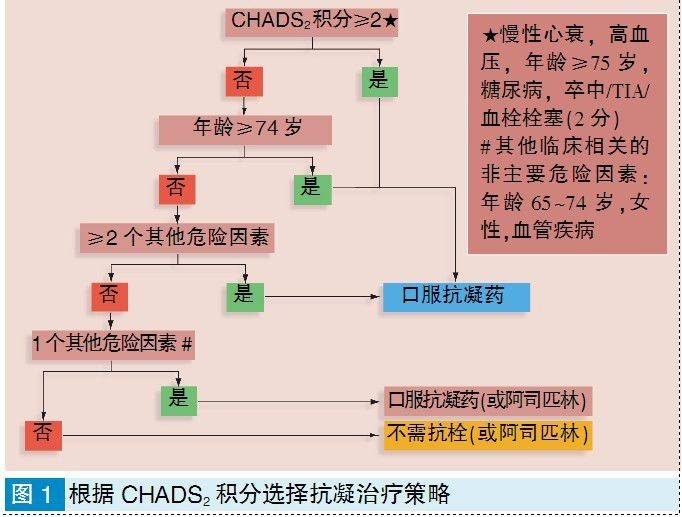

首页
首页
 返回
返回
| CHA2DS2-VASc评分 | 患者数量(n=7329) | 调整后的年卒中风险(%) |
|---|---|---|
| 0 | 1 | 0 |
| 1 | 422 | 1.3 |
| 2 | 1230 | 2.2 |
| 3 | 1730 | 3.2 |
| 4 | 1718 | 4.0 |
| 5 | 1159 | 6.7 |
| 6 | 679 | 9.8 |
| 7 | 294 | 9.6 |
| 8 | 82 | 6.7 |
| 9 | 14 | 15.2 |
该评分应用于非心脏瓣膜病相关的心房颤动，对于抗凝治疗具有一定的指导意义，具体如下：
评分≥2分，高危(年卒中风险2.2~15.2%)，推荐口服抗凝治疗；
评分=1分，中危(年卒中风险1.3%)，可口服抗凝治疗，或使用阿司匹林；
评分=0分，低危(年卒中风险0%)，不需要抗栓治疗，或使用阿司匹林。
也可如下图，根据CHADS2评分选择抗凝治疗策略：
CHA2DS2-VASc评分在CHADS2评分的基础上将年龄≥75岁由1分改为了2分，增加了血管疾病、年龄65~74岁、性别（女性）三个危险因素，从而影响抗凝治疗的决策。